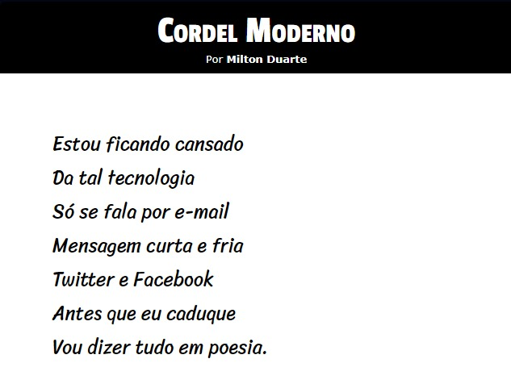
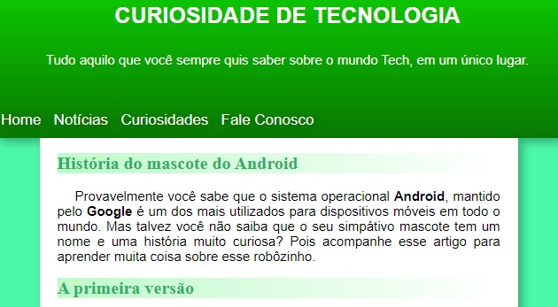
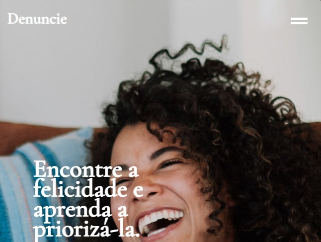

Olá, eu sou Paulo.
Frontend Developer
From Brazil
Um apaixonado desenvolvedor frontend dedicado a transformar conceitos criativos em experiências digitais extraordinárias. Com meus 19 anos de idade e uma mentalidade inovadora, estou empenhado em construir interfaces intuitivas e envolventes que cativam os usuários.


Minhas Skills

HTML

CSS

JAVASCRIPT

REACT.JS
GITHUB

GIT
Minha Experiência
Website para Denúncias
Meu Portfólio
Sobre Mim
Desde cedo, desenvolver para a web sempre me fascinou. A capacidade de criar interfaces interativas e visualmente atraentes é algo que me inspira. Quero ser um desenvolvedor frontend para transformar minhas ideias criativas em experiências digitais incríveis para os usuários.
Atualmente, estou cursando Sistemas de Informação na UFERSA/Angicos e desenvolvi habilidades sólidas em HTML, CSS, JavaScript. Também participei de alguns projetos do cursoemvideo🔗.
Além disso, tenho trabalhado em alguns projetos por conta própria, como meu portfolio pessoal. Nele, pude aprimorar minhas habilidades e aprender a lidar com desafios reais de desenvolvimento frontend, como o medo de iniciar um projeto por não saber por onde começar.
Estou sempre buscando aprender e me manter atualizado com as últimas tendências em desenvolvimento frontend. Recentemente, tenho explorado React.Js.
Além das tecnologias fundamentais, também tenho conhecimentos em controle de versão com Git, Github, design responsivo, etc.
Acredito que a programação é uma constante jornada de aprendizado, e estou sempre disposto a enfrentar novos desafios. Gosto de resolver problemas de forma criativa e aprender com cada experiência.
Meus Projetos
01
Cordel Moderno
Desenvolvi o Cordel Moderno como uma abordagem inovadora para contar histórias usando tecnologia web. Inspirado no literário escritor brasileiro Milton Duarte, este projeto busca unir a rica narrativa poética com elementos modernos de design e interatividade, proporcionando uma experiência única aos usuários. Clique aqui para acessar.
02
Mascote Android
Desenvolvi o Mascote Android com base no modelo fornecido pelo Gustavo Guanabara em seu curso de CSS. O Mascote Android é um projeto de design focado na história por trás da criação do mascote Android. Através de ilustrações expressivas e cativantes. Clique aqui para acessar.
03
Site Denúncias
O App para Denúncias é uma iniciativa voltada para o bem social da mulher, visando proporcionar uma plataforma segura e acessível para relatar incidentes e promover a conscientização. Com uma interface intuitiva e recursos de segurança robustos, a aplicação busca facilitar o processo de denúncia, contribuindo para um ambiente mais seguro e responsável para a mulher. Clique aqui para acessar.
